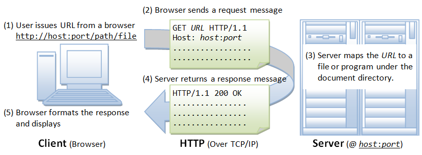
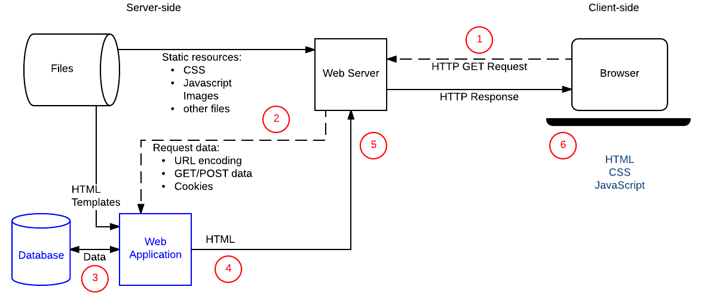
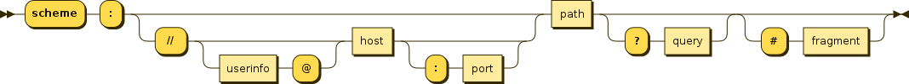
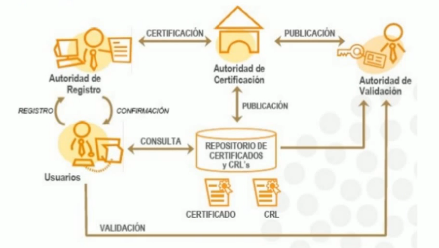

Administració de servidors web
1. Fonaments dels servidors web
A diferència de les aplicacions d'escriptori, que utilitzen els recursos d'un únic ordinador les aplicacions web són distribuïdes, intervenen com a mínin dos equipos diferents: el client i el servidor.
La comunicació és du a terme mitjançant el protocol HTTP, base de la World Wide Web.
L'arquitectura client-servidor és un model de comunicació on dos tipus d'ordinadors o processos tenen rols diferenciats:
- Client: fa peticions de serveis o recursos (com un navegador web que demana una pàgina).
- Servidor: rep les peticions dels clients, les processa i retorna les respostes (com un servidor web que envia les pàgines sol·licitades).
El funcionament bàsic és el següent:
- El client inicia la connexió.
- El servidor atén la petició.
- El servidor retorna la resposta al client.
Conceptes clau
- Comunicació mitjançant protocols de xarxa (com HTTP).
- Centralització dels recursos i dades al servidor.
- Escalabilitat: es poden afegir més clients o més servidors segons les necessitats.
El protocol HTTP
El protocol de transferència d'hipertext (HTTP) és un protocol client-servidor molt senzill que articula els intercanvis d'informació entre els clients HTTP (navegadors) i els servidors HTTP.
HTTP es basa en operacions senzilles de sol·licitud/resposta. Quan un client estableix una connexió amb un servidor i envia un missatge amb les dades de la sol·licitud, el servidor respon amb un missatge similar que conté l'estat de l'operació i el seu resultat de la sol·licitud. Totes les operacions poden adjuntar un objecte o recurs sobre el qual actuen; cada objecte web (document HTML, arxiu multimèdia o aplicació CGI) és conegut pel seu localitzador uniforme de recursos (URL, Uniform Resource Locator). Els recursos poden ser arxius, el resultat de l'execució d'un programa, una consulta a una base de dades, la traducció automàtica d'un document, etc.
HTTP és un protocol sense estat, és a dir, no guarda cap informació sobre connexions anteriors. El desenvolupament d'aplicacions web freqüentment necessita mantenir estat. Per això s'utilitzen les galetes (cookies), és a dir, la informació que un servidor pot emmagatzemar en el sistema client. Això permet que les aplicacions web institueixin la noció de "sessió", i, alhora, permet rastrejar usuaris, ja que les galetes es poden emmagatzemar en el client durant un temps indeterminat.
Per a conèixer amb més profunditat el protocol HTTP avaluarem en què consisteix una transacció HTTP. Cada vegada que un client fa una petició a un servidor, s'executen un seguit d'accions:
- Un usuari accedeix a una adreça d'Internet (URL) seleccionant un enllaç d'un document HTML o introduint-la directament a la barra de navegació d'un navegador web des de la perspectiva del client web. El client web descodifica l'adreça d'Internet (URL) separant-ne les diferents parts. És així com s'identifiquen el protocol d'accés, el node, expressat amb el nom de domini o la seua adreça IP, el possible port opcional (el valor per defecte és el 80) i l'objecte del servidor requerit.
- S'obre una connexió TCP/IP amb el servidor cridant el port TCP corresponent. Es fa la petició. En conseqüència, s'envien l'ordre necessària (GET, POST, HEAD, etc.), l'adreça de l'objecte requerit (el contingut de l'adreça d'Internet del servidor), la versió del protocol HTTP utilitzada (en la major part de les ocasions és HTTP/1.1) i un conjunt variable d'informació que inclou dades sobre les capacitats del navegador web, dades opcionals per al servidor, etc.
- El servidor localitza el recurs sol·licitat i torna la resposta al client.
- Aquesta resposta consisteix en un codi d'estat i el tipus de dada amb extensions multipropòsit de correu d'Internet (MIME, Multipurpose Internet Mail Extension) de la informació de tornada, seguit de la mateixa informació.
- El client formata i mostra el recurs rebut.
- Es tanca la connexió TCP.
Important
Aquest procés es repeteix en cada accés que es faça al servidor HTTP. Per exemple, si es recull un document HTML que conté quatre imatges, el procés de transició mostrat amb anterioritat es repeteix cinc vegades, és a dir, una pel document HTML i quatre per les imatges.

Si el recurs sol·licitat és un programa (CGI, ASP.NET, PHP, etc.) el servidor HTTP redirigirà la petició a la llibreria o intèrpret adequat que executarà el programa i tornarà el control al servidor web.

Format de les URL
La sintaxi general de les URL consisteix en una seqüència jeràrquica de 5 components:
URI = scheme:[//authority]path[?query][#fragment]
on el component authoriry es deivideix en tres subcomponents:
authority = [userinfo@]host[:port]

Tipus MIME
Els tipus MIME (Multipurpose Internet Mail Extensions) són identificadors normalitzats que indiquen quin tipus de contingut està enviant un servidor i com s'ha d'interpretar al navegador o aplicació client.
Cada tipus MIME té dos parts separades per /:
tipus/subtipus
Per exemple:
text/html→ document HTML.text/css→ full d'estils CSS.image/png→ imatge en format PNG.application/json→ dades en format JSON.application/pdf→ arxiu PDF.
Funcionament en HTTP
Quan un servidor (com Apache) respon a una petició HTTP, en les capçaleres de la resposta envia també el MIME type per informar al client de com ha de tractar el recurs.
Exemple de resposta HTTP:
HTTP/1.1 200 OK
Content-Type: text/html; charset=UTF-8
Açò indica que el contingut retornat és un document HTML i que utilitza codificació UTF-8.
Els tipus MIME són importants perquè:
- Permeten al navegador saber si ha de mostrar un fitxer directament (HTML, imatges, text...) o descarregar-lo (ZIP, PDF segons configuració).
- Eviten confusions i problemes de seguretat (per exemple, impedir que un arxiu
.jssiga interpretat com text pla). - Són fonamentals per a aplicacions web modernes que treballen amb formats com JSON o XML en les seues API.
2. Instal·lació d'Apache 2.4
Apache HTTP Server és un dels servidors web més utilitzats del món. A Ubuntu 24.04 es pot instal·lar fàcilment mitjançant el gestor de paquets apt.
A més de la instal·lació, és fonamental conéixer quins són els fitxers de configuració principals i com gestionar el servei.
Instal·lació
Primer actualitzem els paquets del sistema i després instal·lem Apache:
sudo apt update && sudo apt upgrade -y
sudo apt install apache2 -y
Una vegada instal·lat, comprovem l'estat del servei:
sudo systemctl status apache2
Si tot ha anat bé, podrem veure la pàgina de benvinguda d'Apache obrint el navegador i entrant a:
http://localhost
Gestió bàsica del servei Apache
Iniciar Apache:
sudo systemctl start apache2
Aturar Apache:
sudo systemctl stop apache2
Reiniciar Apache:
sudo systemctl restart apache2
Recarregar la configuració (sense reiniciar el procés):
sudo systemctl reload apache2
3. Configuració
Fitxers i directoris de configuració principals
Quan treballem amb Apache és fonamental conéixer la seua estructura de configuració.
A Ubuntu es troba dins del directori /etc/apache2/.
-
/etc/apache2/apache2.conf
Fitxer principal de configuració. Inclou directives globals i carrega la resta de configuracions. -
/etc/apache2/ports.conf
Defineix els ports d'escolta d'Apache (per defecte: 80 per HTTP i 443 per HTTPS). -
/etc/apache2/sites-available/
Directori on es troben les configuracions dels llocs web (VirtualHosts) que podem habilitar o deshabilitar. -
/etc/apache2/sites-enabled/
Conté enllaços simbòlics als fitxers activats des desites-available/. Només els fitxers que hi ha ací són carregats per Apache. -
/etc/apache2/mods-available/
Llista de mòduls disponibles (per exemple, PHP, SSL, rewrite…). -
/etc/apache2/mods-enabled/
Mòduls activats actualment. Igual que amb els llocs, es gestionen amb enllaços simbòlics. -
/etc/apache2/conf-available/i/etc/apache2/conf-enabled/
Fitxers de configuració addicional que no són pròpiament _VirtualHosts ni mòduls, però que poden contenir ajustos específics.
Gestió de tipus MIME
En Apache, els tipus MIME es configuren normalment al fitxer:
/etc/apache2/mods-available/mime.conf
O bé dins d'un VirtualHost amb la directiva AddType.
Exemple:
AddType application/pdf .pdf
AddType application/x-httpd-php .php
Així, Apache sap quin MIME type associar a cada extensió de fitxer.
- Fitxers de configuració i/o ferramentes de configuració
- Configuració avançada del servidor web
- Mòduls: instal·lació, configuració i ús
- Amfitrions virtuals: creació, configuració i utilització
4. Seguretat en servidors web
4.1 Autenticació i control d'accés
La autenticació és el procés mitjançant el qual un servidor verifica la identitat d'un usuari o d'un sistema que intenta accedir a un recurs. El control d'accés estableix què pot fer cadascun d'aquests usuaris una vegada identificats.
Tipus d'autenticació
Autenticació bàsica (Basic Auth)
Envia les credencials (usuari i contrasenya) codificades en Base64 a través de les capçaleres HTTP. No és segura si no s'utilitza amb HTTPS, ja que les credencials poden ser interceptades. Aquest mètode es configura en el servidor HTTP.
Autenticació digest (Digest Auth)
Utilitza un hash (MD5 o SHA) per evitar que la contrasenya viatge en text pla. Millora la seguretat respecte a la bàsica, però ha quedat en desús davant mètodes més moderns. Aquest mètode es configura en el servidor HTTP.
Autenticació basada en formularis (Form-based)**
L'usuari introdueix les credencials en un formulari HTML. El servidor valida i genera una sessió o token. És el mètode més utilitzat en aplicacions web modernes.
Autenticació mitjançant token**
Després de validar les credencials, el servidor genera un token (per exemple JWT — JSON Web Token). Aquest token s'envia amb cada petició posterior (normalment en la capçalera Authorization: Bearer <token>).
4.2 El protocol HTTPS
El protocol HTTPS (HyperText Transfer Protocol Secure) és l'evolució segura d'HTTP, el sistema que fa possible la navegació web.
La diferència principal és que HTTPS incorpora una capa addicional de seguretat basada en el protocol TLS (Transport Layer Security), encarregat de xifrar tota la comunicació entre el navegador de l'usuari (client) i el servidor web.
Criptografia
La criptografia és la tècnica que permet protegir la informació transformant-la en un format inintel·ligible per a qualsevol que no tinga la clau adequada per desxifrar-la.
Segons el tipus de claus utilitzades, podem distingir dos grans sistemes: la criptografia de clau simètrica i la criptografia de clau pública (asimètrica).
En la criptografia simètrica, tant el xifrat com el desxifrat s'efectuen amb la mateixa clau. Això significa que tant l'emissor com el receptor han de compartir una clau secreta comuna abans de poder comunicar-se de manera segura.
La criptografia asimètrica utilitza dues claus diferents però matemàticament relacionades:
- Una clau pública, que pot ser compartida lliurement.
- Una clau privada, que només coneix el propietari.
El que s'encripta amb una d'aquestes claus només pot ser desencriptat amb l'altra.
Això permet, per exemple, que qualsevol puga enviar un missatge xifrat al propietari utilitzant la seua clau pública, però només ell el puga llegir gràcies a la seua clau privada. Això garanteix que les dades que viatgen per la xarxa —com contrasenyes, informació personal o dades bancàries— no puguen ser interceptades ni modificades per tercers.
L'ús d'HTTPS té tres objectius fonamentals. En primer lloc, la confidencialitat, que assegura que només el client i el servidor puguen llegir el contingut de la comunicació. En segon lloc, la integritat, que garanteix que la informació no s'ha alterat durant el trajecte. I finalment, l'autenticitat, que permet al client verificar que el servidor amb què es comunica és realment qui diu ser i no una còpia fraudulenta.
Per aconseguir-ho, HTTPS es basa en un procés intern conegut com a protocol TLS, que s'executa de manera automàtica cada vegada que ens connectem a una pàgina segura.
El seu funcionament pot resumir-se en tres fases principals:
-
En la primera, anomenada negociació o handshake, el client envia al servidor la informació sobre les versions de TLS i els algoritmes de xifrat que suporta. El servidor, per la seua banda, respon amb el seu certificat digital i escull l'algoritme més adequat per a la comunicació.
-
A continuació té lloc l'intercanvi de claus, on s'estableix una clau de sessió comuna utilitzant tècniques de criptografia asimètrica. Aquesta clau serà única per a aquella connexió i servirà per xifrar totes les dades que es transmeten.
-
Un cop establerta la clau, comença la fase de comunicació segura, en què tota la informació viatja de manera xifrada. Si algú intentara interceptar el trànsit, només veuria dades inintel·ligibles.
Els avantatges d'utilitzar HTTPS són evidents. A més de protegir informació sensible com contrasenyes o dades de targetes de crèdit, evita atacs del tipus Man-in-the-Middle (MITM), en què un atacant podria interceptar la comunicació entre el client i el servidor. També aporta credibilitat i confiança als usuaris, ja que els navegadors mostren un cadenat o indicadors visuals quan una pàgina és segura.
Finalment, és important destacar que molts serveis i tecnologies modernes, com HTTP/2, OAuth2 o les API REST d'aplicacions web, requereixen l'ús d'HTTPS per funcionar correctament.
En resum, HTTPS no sols fa més segura la web: és la base sobre la qual es construeix la confiança digital a Internet.
4.3 Certificats i servidors de certificats
Quan un usuari accedeix a una pàgina web mitjançant HTTPS, el seu navegador necessita assegurar-se que realment està connectant-se amb el servidor legítim i no amb un impostor.
Per aconseguir-ho, entra en joc el certificat digital, un document electrònic que actua com a “carnet d'identitat” del servidor.
Aquest certificat acredita la seua identitat i permet establir una connexió segura mitjançant mecanismes de xifrat.
Un certificat digital conté informació essencial sobre el servidor o la persona que el posseeix.
Entre altres dades, hi trobem el nom del titular o domini (per exemple, www.exemple.com), la clau pública associada —que s'utilitza per establir el xifrat de la comunicació—, la entitat emissora o Certification Authority (CA) que l'ha validat, el període de validesa i la signatura digital de l'autoritat que el certifica.
Gràcies a aquesta signatura, els navegadors poden verificar que el certificat no ha sigut manipulat i que prové d'una font de confiança.
Tipus de certificats digitals
No tots els certificats tenen el mateix origen ni el mateix nivell de confiança. Podem distingir diversos tipus segons la seua procedència i el grau de verificació que ofereixen:
-
Certificat autosignat: és generat pel propi servidor, sense la intervenció d'una autoritat de certificació.
Tot i que permet xifrar la connexió, els navegadors no el reconeixen com a fiable i mostren avisos de seguretat.
És útil per a entorns de proves o desenvolupament intern. -
Certificat emès per una CA reconeguda: és el tipus més comú en entorns de producció.
Una autoritat de certificació de confiança, com Let's Encrypt o DigiCert, comprova la identitat del titular abans d'emetre'l.
Això garanteix que el lloc web és legítim i que la connexió és segura. -
Certificat wildcard: permet protegir un domini i tots els seus subdominis, per exemple
*.exemple.com.
És especialment pràctic per a empreses o organitzacions amb múltiples serveis sota un mateix domini. -
Certificat d'alta validació (EV – Extended Validation): ofereix el nivell més alt de seguretat i autenticitat.
Requereix una verificació exhaustiva de la identitat de l'empresa, i alguns navegadors mostren el nom de l'organització al costat de la barra d'adreces per donar confiança a l'usuari.
La infraestructura de clau pública
Diagrama de la PKI (Public Key Infrastructure)

Font: https://www.youtube.com/watch?v=awCgkKaO70w
Els components de la PKI són:
-
Les autoritats de certificació (CA) són entitats de confiança que s'encarreguen d'emetre, validar i revocar certificats digitals.
Són un element fonamental dins de l'anomenada infraestructura de clau pública (PKI – Public Key Infrastructure), que permet gestionar de manera segura les claus criptogràfiques i els certificats a Internet. -
L'autoritats de registre (RA) es la responsable de verificar l'enllaç entre els certificats (concretament, entre la clave pública del certificat i la identidat dels seus titulars.
-
Els repositoris son les estructures encarregades d'emmagatzemar la informació relativa a la PKI. Els dos repositoris més importants són el repositori de certificats i el repositorio de llistes de revocació de certificats (CRL).
-
L'autoritat de validació (VA) és l'encarregadade comprovar la validesa dels certificats digitals.
Els servidors de certificats són sistemes que faciliten la petició i renovació automàtica d'aquests certificats, de manera que les organitzacions poden mantenir les seues connexions segures sense intervenció manual constant.
Entre les eines més utilitzades en aquest àmbit trobem:
- Let's Encrypt, una autoritat de certificació gratuïta i automatitzada que ha democratitzat l'ús de HTTPS.
- Certbot, un client que permet obtenir i renovar certificats de manera senzilla.
- OpenSSL, una utilitat molt completa per crear i gestionar certificats manualment, ideal per a entorns de proves o configuracions avançades.
En conjunt, els certificats digitals i les autoritats de certificació constitueixen la base de la confiança a Internet, garantint que la informació que enviem o rebem no puga ser interceptada ni manipulada per tercers.
3.4 Configuració segura de servidors HTTP
4. Desplegament d'aplicacions
- Desplegament d'aplicacions sobre servidors web.
- Desplegament de servidors web mitjançant tecnologies de virtualització, en el núvol i en contenidors.
5. Gestió i manteniment d'aplicacions web
En la implantació d'aplicacions web modernes, els logs deixen de ser simples fitxers de diagnòstic per convertir-se en una font estratègica d'informació. La gestió manual o descentralitzada dels logs (fitxers locals, consultes amb grep, etc.) resulta insuficient quan augmenten la càrrega, la complexitat i les exigències de qualitat del servei.
L'ús d'eines de gestió de logs és necessari per a:
-
Diagnòstic i resolució d'incidències
- Detecció ràpida d'errors (4xx, 5xx).
- Anàlisi de causes arrel mitjançant correlació temporal.
-
Avaluació del rendiment
- Mesura de latències i temps de resposta.
- Identificació de colls de botella.
-
Presa de decisions tècniques
- Priorització d'optimitzacions.
- Comparació entre versions de l'aplicació.
-
Seguretat
- Detecció d'accessos anòmals o intents d'atac.
-
Escalabilitat i manteniment
- Visió global del sistema des d'un punt central.
En aquest context, la centralització de logs és un requisit clau en qualsevol entorn professional.
Estructura bàsica d'un sistema de gestió de logs

Figura: Arquitectura basada en Loki i Grafana
Un sistema modern de gestió de logs es compon, com a mínim, dels següents elements:
-
Fonts de logs
- Servidors web (Apache, Nginx).
- Aplicacions web (backend).
- Sistema operatiu.
-
Agent de recollida
- S'encarrega de llegir els logs locals i enviar-los.
- En l'ecosistema Grafana, aquest paper el pot assumir Alloy.
-
Sistema d'emmagatzematge i consulta
- Optimitzat per a grans volums de logs.
- Permet cerques eficients per temps i etiquetes.
-
Eina de visualització i anàlisi
- Dashboards, gràfiques i alertes.
- Facilita la interpretació de la informació.
Arquitectura proposada
Servidor web → Agent (Alloy) → Loki → Grafana
- Loki: emmagatzema i indexa logs de manera eficient.
- Grafana: permet consultar, visualitzar i analitzar els logs.
Aquest model separa clarament recollida, emmagatzematge i visualització, facilitant l'escalabilitat i el manteniment.
Guia pràctica: implementació de Grafana + Loki + Alloy en Ubuntu 24.04
A continuació es presenta una implementació funcional i adequada per a entorns formatius i de producció bàsica.
Preparació del sistema
Actualitzar el sistema:
sudo apt update && sudo apt upgrade -y
Instal·lar paquets bàsics:
sudo apt install -y curl wget unzip
Instal·lació de Loki
- Crear directoris:
sudo mkdir -p /opt/loki /etc/loki /var/lib/loki
- Descarregar Loki:
cd /opt/loki
sudo wget https://github.com/grafana/loki/releases/latest/download/loki-linux-amd64.zip
sudo unzip loki-linux-amd64.zip
sudo chmod +x loki-linux-amd64
- Definir la configuració bàsica (
/etc/loki/loki.yml):
auth_enabled: false
server:
http_listen_port: 3100
common:
path_prefix: /var/lib/loki
ring:
kvstore:
store: inmemory
storage:
filesystem:
chunks_directory: /var/lib/loki/chunks
rules_directory: /var/lib/loki/rules
replication_factor: 1
schema_config:
configs:
- from: 2024-01-01
store: tsdb
object_store: filesystem
schema: v13
index:
prefix: index_
period: 24h
- Executar Loki:
sudo /opt/loki/loki-linux-amd64 -config.file=/etc/loki/loki.yml
Instal·lació de Grafana Alloy
- Descarregar Allow:
cd /tmp
wget https://github.com/grafana/alloy/releases/latest/download/alloy-linux-amd64.zip
unzip alloy-linux-amd64.zip
sudo mv alloy-linux-amd64 /usr/local/bin/alloy
sudo chmod +x /usr/local/bin/alloy
- Verificar la versió:
alloy --version
- Crear directori de configuració:
sudo mkdir -p /etc/alloy
- Crear el fitxer de configuració
/etc/alloy/config.alloyperquè lliga els registres d'Apache:
local.file_match "apache_logs" {
path_targets = [
{ __path__ = "/var/log/apache2/access.log", job="apache" },
{ __path__ = "/var/log/apache2/error.log", "job="apache" },
]
}
loki.source.file "apache" {
targets = local.file_match.apache_logs.targets
forward_to = [loki.write.default.receiver]
}
loki.write "default" {
endpoint {
url = "http://localhost:3100/loki/api/v1/push"
}
}
Important
Este exemple suposa que hi ha registres a /var/log/apache2/access.log. Si estan a un altre lloc caldrà canviar la ruta.
Aquesta configuració:
- Llig access.log i error.log
- Envia els logs a Loki per HTTP
- No necessita autenticació (coherent amb
auth_enabled: false)
- Executar Alloy de forma manual
sudo alloy run /etc/alloy/config.alloy
Si tot és correcte, no apareixeran errors i Alloy quedarà escoltant.
- Generar trànsit:
curl http://localhost
Instal·lació de Grafana
- Afegir el repositori oficial:
sudo apt install -y software-properties-common
sudo add-apt-repository "deb https://packages.grafana.com/oss/deb stable main"
wget -q -O - https://packages.grafana.com/gpg.key | sudo apt-key add -
- Instal·lar Grafana:
sudo apt update
sudo apt install -y grafana
- Iniciar i habilitar el servei:
sudo systemctl enable grafana-server
sudo systemctl start grafana-server
- Accedir via web:
http://IP_DEL_SERVIDOR:3000
Usuari i contrasenya per defecte: admin / admin.
Connexió de Grafana amb Loki
- Accedir a Grafana.
- Settings → Data sources → Add data source.
- Seleccionar Loki.
- URL:
http://localhost:3100
- Guardar i provar la connexió.
Visualització bàsica de logs
- Accedir a Explore.
- Seleccionar la font de dades Loki.
- Executar una consulta simple:
{job="apache"}
A partir d'ací es poden crear:
- Dashboards d'errors.
- Gràfiques de volum de logs.
- Alertes basades en patrons.